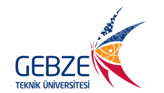

We are hiring graduate students and postdocs
I am looking for highly motivated graduate students and postdoctoral researchers with interests in mechanical vibrations and related areas. If you are interested, please get in touch by email.
